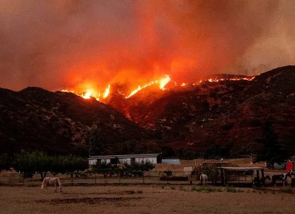
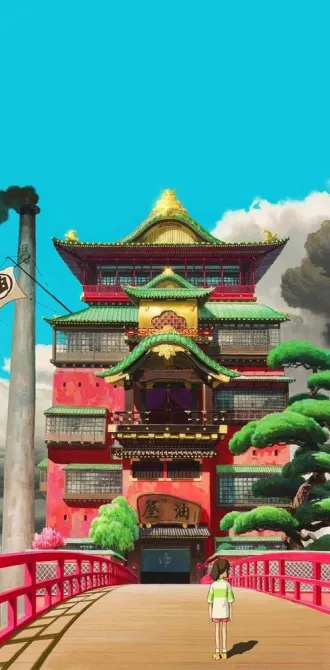
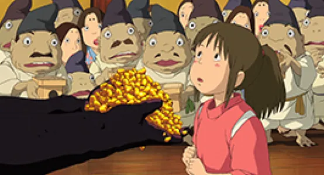
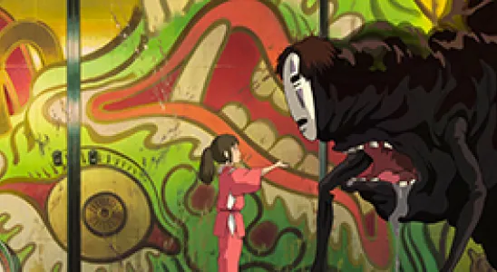
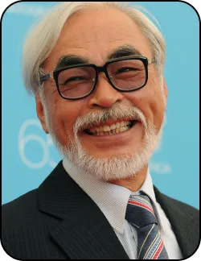

Une crainte
Notre génération face à de nouveaux enjeux
Notre génération devra relever de nombreux défis et notre avenir sera impacté par des crises environnementales et politiques.
Le film relate l’histoire de Chihiro, une jeune fille déménageant avec ses parents. Passant dans une forêt, ils trouvent un étrange portail menant à un parc à thème désert mais avec des restaurants proposant des mets délicieux. Chihiro refusa d’y toucher, mais ses parents engloutissent les plats et se transforment en porc. Chihiro se retrouve donc seule dans un monde fantastique en marge de la réalité.

Chihiro prenant le train avec le Sans-visage, un esprit mystérieux
En grandissant, nous prenons conscience que le monde dans lequel nous vivons n’est pas si simple et utopique. Des changements vont s’opérer sur nous tout le long de notre vie. Mais nous ne sommes pas les seules. Le monde dans lequel nous vivons change aussi.Le passage à l’âge adulte, c’est aussi prendre conscience des situations déplorables qui nous entourent.
Changement climatique : Un constat alarmant
Le changement climatique est de plus en plus présent dans notre quotidien.Notamment avec la hausse des températures. Dans le futur, les conditions environnementales de certains territoires pourraient encore plus se dégrader. Plusieurs littoraux dans le monde risquent de disparaître à cause de la monté des eaux. Selon le GIEC (Groupe d’experts intergouvernemental sur l’évolution du climat) 3,3 à 3,6 milliard de personnes seraient vulnérables faces aux catastrophes naturelles et à la montés de températures. La Californie et L’Inde sont des territoires menacé par cela.
Chihiro aidant une noireaude à transporter du charbon
Mise en scène et métaphore
Les plans fixe et la verticalité utilisé dans le film rend les décors qui font face au personnage plus immense. Ils illustrent le vertige et le sentiment de déroute de Chihiro. En effet, le bain public serait une métaphore du monde du travail et de la société capitaliste. Chihiro représenterait parallèlement les jeunes générations se retrouvant soudainement dans ce monde dérouté face aux responsabilités qu’il représente.
Plan fixe de Chihiro face au bain public
Le bâtiment en lui-même montre une hiérarchie sociale avec les noiraudes et Kamaji en bas de l’échelle effectuant un travail fastidieux en continu, et Yubaba vivant dans un cadre plus confortable montrant sa richesse. L’attachement à l’argent est aussi montré par ce personnage et les employés des bains appâtés par l’or.
Chihiro, fidèle à ses valeurs
Chihiro se démarque de ces derniers en comprenant que l’or n’est pas la chose la plus importante. Par ce comportement Miyazaki dénonce la cupidité de certaines personnes dans nos sociétés prêtes à tout pour l’argent ou la consommation notamment avec le Sans-visage. Mais, certaines personnes comme Chihiro arriverait à se détacher de ce vice en se concentrant sur d’autres actions comme retrouver ses parents ou sauver Haku.
Chihiro refusant l’or que lui offre le sans-visage
Parallèlement, cela pourrait montrer que les jeunes adultes d’aujourdhui seraient capable de s’affranchir de certaines valeurs de notre société notamment forger notre bonheur sur autre chose que l’argent.
Chihiro face au sans-visage symbole de la surconsommation
Le film évoque aussi l’aliénation du travail, notamment lorsque Yubaba “vole” le nom de Chihiro pour l’appeler Sen, oubliant ainsi peu à peu son identité
Au fil du film, Chihiro semble gagner en confiance et mieux évoluer dans cet univers grâce à la débrouillardise qu’elle s’est forgé.

Chihiro retrouvant Haku
Par ce personnage, Miyazaki montre que notre vie représente un périple empli de difficultés et de défis, ou tout nous semble à un moment ou à un autre compliqué. Mais, en faisant preuve de courage et de ressources , ces épreuves nous permettront de grandir.
Si vous voulez en savoir sur les oeuvres de Miyazaki vous pouvez consulter sa filmographie !
Cliquez-ici